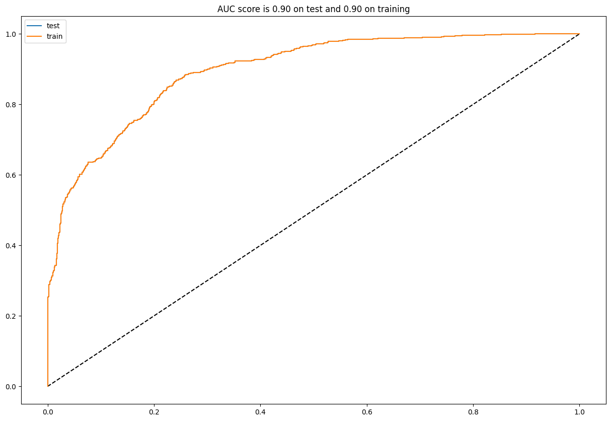
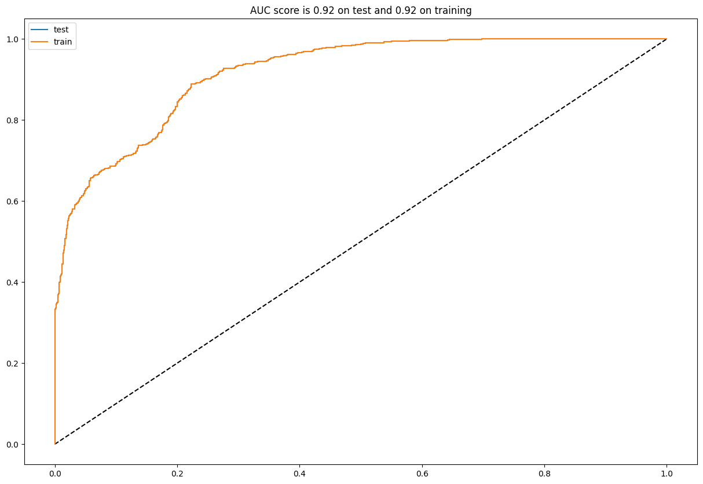
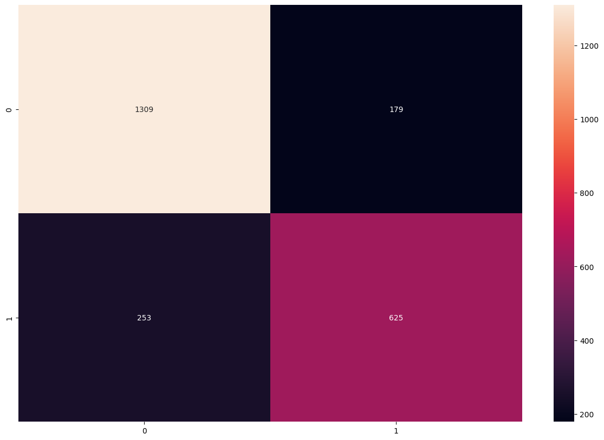
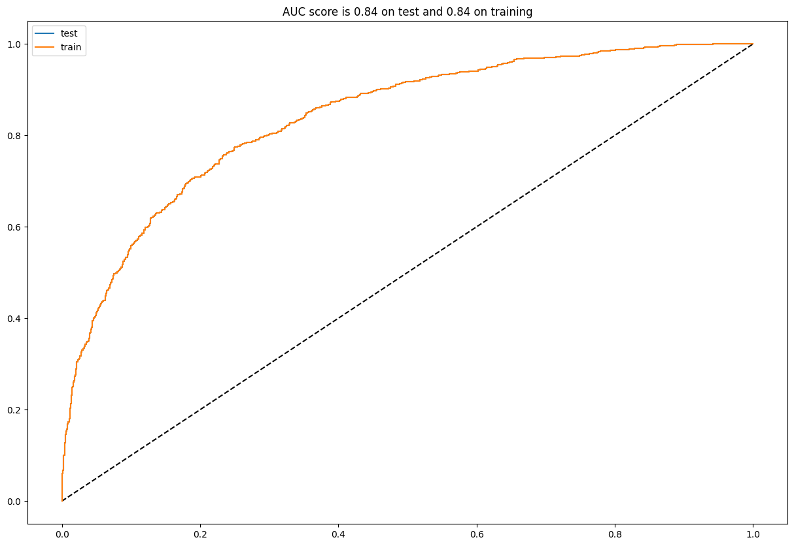
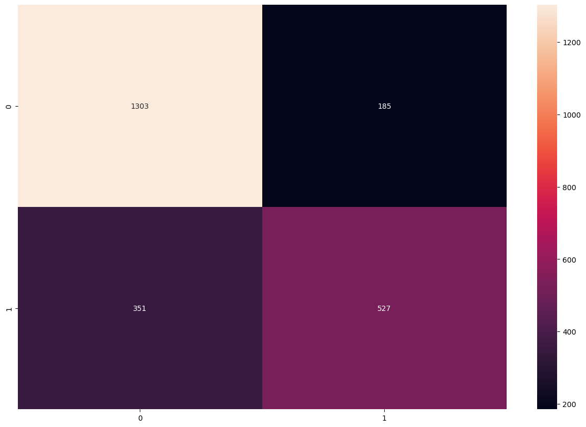

model_db = pd.read_csv('data/modelling_dataset.csv')
team_stats_raw = pd.read_csv('data/team_stats_by_match.csv')Projeto
Um trabalho desenvolvido na disciplina de Machine Learning (Estatística-UFSM) para aplicar as técnicas de ML visando predizer o vencedor da Copa do Mundo FIFA 2022, simulando partida a partida da fase de grupo até a grande final.
Utilizando dois datasets como fontes International football results from 1872 to 2022 e FIFA World Ranking 1992-2022.
A estruturação do feature engineering presente nesse trabalho foi desenvolvida em Soccer World Cup 2018 Winner. No entanto, foi realizado uma metodologia buscando uma acurácia melhor, adicionando pouca complexidade (covariáveis) ao modelo.
Os modelos utilizados são para classificação binária para simplificação da modelagem e estruturação das variáveis, assim os modelos são para predizer vitória/derrota, com as partidas que foram empates sendo excluídas da modelagem. A probabilidade de vencer a partida é dada como a média de vencer a partida dentro de casa e fora de casa (pois na copa do mundo não tem vantagem de mandante).
O autor da modelagem para a previsão do vencedor da Copa do Mundo de 2018, que utilizei como base desse projeto, também realizou a modelagem para a Copa de 2022, estando disponível em Predicting FIFA 2022 World Cup with ML.
::: {.cell _cell_guid=‘b1076dfc-b9ad-4769-8c92-a6c4dae69d19’ _uuid=‘8f2839f25d086af736a60e9eeb907d3b93b6e0e5’ execution=‘{“iopub.execute_input”:“2022-11-15T20:56:12.986388Z”,“iopub.status.busy”:“2022-11-15T20:56:12.985409Z”,“iopub.status.idle”:“2022-11-15T20:56:13.010933Z”,“shell.execute_reply”:“2022-11-15T20:56:13.009703Z”}’ papermill=‘{“duration”:0.057886,“end_time”:“2022-11-15T20:56:13.013715”,“exception”:false,“start_time”:“2022-11-15T20:56:12.955829”,“status”:“completed”}’ tags=‘[]’ execution_count=9}
import numpy as np
import pandas as pd
import re
from sklearn.ensemble import RandomForestClassifier, GradientBoostingClassifier
from sklearn.model_selection import train_test_split, GridSearchCV
from sklearn.linear_model import LogisticRegression
from sklearn.metrics import confusion_matrix, roc_curve, roc_auc_score
from operator import itemgetter
import seaborn as sns
import matplotlib.pyplot as plt
#import networkx as nx
#from networkx.drawing.nx_pydot import graphviz_layout
from utils.modelling_functions import analyze, scraping, simulation_groups, simulation_playoff:::
Modelagem
Após a construção das variáveis e sua avaliação, nós temos os dataset prontos com colunas com poder preditivo interessante (como visto em feature_analysis), nós podemos começar a modelagem.
Nós iremos testar 3 modelos: Regressão Logística, Random Forest e Gradient Boosting. Selecionaremos o modelo com melhor Recall/Revocação/Sensibilidade.
X = model_db.iloc[:, 3:]
y = model_db[["result"]]gb = GradientBoostingClassifier(random_state=5)
params = {"learning_rate": [0.01, 0.1],
"min_samples_split": [3, 5],
"min_samples_leaf": [5, 7, 10],
"max_depth":[3, 5],
"max_features":["sqrt"],
"n_estimators":[200]
}
gb_cv = GridSearchCV(gb, params, cv = 5, n_jobs = -1, verbose = False)gb_cv.fit(X.values, np.ravel(y))GridSearchCV(cv=5, estimator=GradientBoostingClassifier(random_state=5),
n_jobs=-1,
param_grid={'learning_rate': [0.01, 0.1], 'max_depth': [3, 5],
'max_features': ['sqrt'],
'min_samples_leaf': [5, 7, 10],
'min_samples_split': [3, 5], 'n_estimators': [200]},
verbose=False)In a Jupyter environment, please rerun this cell to show the HTML representation or trust the notebook. On GitHub, the HTML representation is unable to render, please try loading this page with nbviewer.org.
GridSearchCV(cv=5, estimator=GradientBoostingClassifier(random_state=5),
n_jobs=-1,
param_grid={'learning_rate': [0.01, 0.1], 'max_depth': [3, 5],
'max_features': ['sqrt'],
'min_samples_leaf': [5, 7, 10],
'min_samples_split': [3, 5], 'n_estimators': [200]},
verbose=False)GradientBoostingClassifier(random_state=5)
GradientBoostingClassifier(random_state=5)
gb = gb_cv.best_estimator_print(gb_cv.best_params_){'learning_rate': 0.01, 'max_depth': 5, 'max_features': 'sqrt', 'min_samples_leaf': 7, 'min_samples_split': 3, 'n_estimators': 200}params_rf = {
"min_samples_split": [14, 15, 17],
"min_samples_leaf": [5],
"max_depth":[8],
"max_features":["log2", "sqrt"],
"max_leaf_nodes": [100],
"criterion": ["entropy", "log_loss"],
"n_estimators":[500]
}
rf = RandomForestClassifier(random_state=5)
rf_cv = GridSearchCV(rf, params_rf, cv = 5, n_jobs = -1, verbose = False)
rf_cv.fit(X.values, np.ravel(y))GridSearchCV(cv=5, estimator=RandomForestClassifier(random_state=5), n_jobs=-1,
param_grid={'criterion': ['entropy', 'log_loss'], 'max_depth': [8],
'max_features': ['log2', 'sqrt'],
'max_leaf_nodes': [100], 'min_samples_leaf': [5],
'min_samples_split': [14, 15, 17],
'n_estimators': [500]},
verbose=False)In a Jupyter environment, please rerun this cell to show the HTML representation or trust the notebook. On GitHub, the HTML representation is unable to render, please try loading this page with nbviewer.org.
GridSearchCV(cv=5, estimator=RandomForestClassifier(random_state=5), n_jobs=-1,
param_grid={'criterion': ['entropy', 'log_loss'], 'max_depth': [8],
'max_features': ['log2', 'sqrt'],
'max_leaf_nodes': [100], 'min_samples_leaf': [5],
'min_samples_split': [14, 15, 17],
'n_estimators': [500]},
verbose=False)RandomForestClassifier(random_state=5)
RandomForestClassifier(random_state=5)
rf = rf_cv.best_estimator_params_rlog = {"C": np.arange(0.01,0.5,0.05), "penalty":["l1","l2", "elasticnet", "none"], "max_iter" : [10000]}# l1 lasso l2 ridge
rlog = LogisticRegression()
logreg_cv = GridSearchCV(rlog, params_rlog, cv=5, n_jobs = -1, verbose = False)
logreg_cv.fit(X.values, np.ravel(y))c:\Users\aluga.com\repos\FIFA_WC_22_Predictions\venv\lib\site-packages\sklearn\model_selection\_validation.py:378: FitFailedWarning:
100 fits failed out of a total of 200.
The score on these train-test partitions for these parameters will be set to nan.
If these failures are not expected, you can try to debug them by setting error_score='raise'.
Below are more details about the failures:
--------------------------------------------------------------------------------
50 fits failed with the following error:
Traceback (most recent call last):
File "c:\Users\aluga.com\repos\FIFA_WC_22_Predictions\venv\lib\site-packages\sklearn\model_selection\_validation.py", line 686, in _fit_and_score
estimator.fit(X_train, y_train, **fit_params)
File "c:\Users\aluga.com\repos\FIFA_WC_22_Predictions\venv\lib\site-packages\sklearn\linear_model\_logistic.py", line 1091, in fit
solver = _check_solver(self.solver, self.penalty, self.dual)
File "c:\Users\aluga.com\repos\FIFA_WC_22_Predictions\venv\lib\site-packages\sklearn\linear_model\_logistic.py", line 61, in _check_solver
raise ValueError(
ValueError: Solver lbfgs supports only 'l2' or 'none' penalties, got l1 penalty.
--------------------------------------------------------------------------------
50 fits failed with the following error:
Traceback (most recent call last):
File "c:\Users\aluga.com\repos\FIFA_WC_22_Predictions\venv\lib\site-packages\sklearn\model_selection\_validation.py", line 686, in _fit_and_score
estimator.fit(X_train, y_train, **fit_params)
File "c:\Users\aluga.com\repos\FIFA_WC_22_Predictions\venv\lib\site-packages\sklearn\linear_model\_logistic.py", line 1091, in fit
solver = _check_solver(self.solver, self.penalty, self.dual)
File "c:\Users\aluga.com\repos\FIFA_WC_22_Predictions\venv\lib\site-packages\sklearn\linear_model\_logistic.py", line 61, in _check_solver
raise ValueError(
ValueError: Solver lbfgs supports only 'l2' or 'none' penalties, got elasticnet penalty.
warnings.warn(some_fits_failed_message, FitFailedWarning)
c:\Users\aluga.com\repos\FIFA_WC_22_Predictions\venv\lib\site-packages\sklearn\model_selection\_search.py:953: UserWarning: One or more of the test scores are non-finite: [ nan 0.76881384 nan 0.77472993 nan 0.77093068
nan 0.77472993 nan 0.77219739 nan 0.77472993
nan 0.77304306 nan 0.77472993 nan 0.77262023
nan 0.77472993 nan 0.77219739 nan 0.77472993
nan 0.77219739 nan 0.77472993 nan 0.77261933
nan 0.77472993 nan 0.77261933 nan 0.77472993
nan 0.77346411 nan 0.77472993]
warnings.warn(
c:\Users\aluga.com\repos\FIFA_WC_22_Predictions\venv\lib\site-packages\sklearn\linear_model\_logistic.py:1113: UserWarning: Setting penalty='none' will ignore the C and l1_ratio parameters
warnings.warn(GridSearchCV(cv=5, estimator=LogisticRegression(), n_jobs=-1,
param_grid={'C': array([0.01, 0.06, 0.11, 0.16, 0.21, 0.26, 0.31, 0.36, 0.41, 0.46]),
'max_iter': [10000],
'penalty': ['l1', 'l2', 'elasticnet', 'none']},
verbose=False)In a Jupyter environment, please rerun this cell to show the HTML representation or trust the notebook. On GitHub, the HTML representation is unable to render, please try loading this page with nbviewer.org.
GridSearchCV(cv=5, estimator=LogisticRegression(), n_jobs=-1,
param_grid={'C': array([0.01, 0.06, 0.11, 0.16, 0.21, 0.26, 0.31, 0.36, 0.41, 0.46]),
'max_iter': [10000],
'penalty': ['l1', 'l2', 'elasticnet', 'none']},
verbose=False)LogisticRegression()
LogisticRegression()
rlog = logreg_cv.best_estimator_
# # Predicting the Test set results
# y_pred = rf.predict(X_test)
# #Reverse factorize (converting y_pred from 0s,1s and 2s to Iris-setosa, Iris-versicolor and Iris-virginica
# # reversefactor = dict(zip(range(3),definitions))
# # y_test = np.vectorize(reversefactor.get)(y_test)
# # y_pred = np.vectorize(reversefactor.get)(y_pred)
# # Making the Confusion Matrix
# pd.crosstab(np.ravel(y_test), y_pred)analyze(gb, y, y, X, X)
analyze(rf, y, y, X, X)

analyze(rlog, y, y, X, X)

O modelo que irei escolher para a “previsão oficial” será o modelo de Random Forest, pois os outros ficaram mais underfittados ou menos constantes em sementes diferentes.
Simulação da Copa
Para podermos simularmos os jogos, primeiramente vamos realizar um Web Scraping do Wikipédia para conseguirmos pegar os grupos, times e partidas da primeira fase.
def find_stats(team_1):
#team_1 = "Qatar"
past_games = team_stats_raw[(team_stats_raw["team"] == team_1)].sort_values("date")
last5 = team_stats_raw[(team_stats_raw["team"] == team_1)].sort_values("date").tail(5)
team_1_rank = past_games["rank"].values[-1]
team_1_goals = past_games['score'].mean()
team_1_goals_l5 = last5['score'].mean()
team_1_goals_suf = past_games['suf_score'].mean()
team_1_goals_suf_l5 = last5['suf_score'].mean()
team_1_rank_suf = past_games['rank_suf'].mean()
team_1_rank_suf_l5 = last5['rank_suf'].mean()
team_1_gp_rank = past_games['points_by_rank'].mean()
team_1_gp_rank_l5 = last5['points_by_rank'].mean()
team_1_points_by_classification = past_games['points_by_classification'].mean()
return [team_1_rank, team_1_goals, team_1_goals_l5, team_1_goals_suf, team_1_goals_suf_l5, team_1_rank_suf, team_1_rank_suf_l5, team_1_gp_rank, team_1_gp_rank_l5, team_1_points_by_classification]def find_features(team_1, team_2):
rank_dif = team_1[0] - team_2[0]
goals_dif = team_1[1] - team_2[1]
goals_dif_l5 = team_1[2] - team_2[2]
goals_suf_dif = team_1[3] - team_2[3]
goals_suf_dif_l5 = team_1[4] - team_2[4]
goals_per_ranking_dif = (team_1[1]/team_1[5]) - (team_2[1]/team_2[5])
dif_rank_agst = team_1[5] - team_2[5]
dif_rank_agst_l5 = team_1[6] - team_2[6]
dif_gp_rank = team_1[7] - team_2[7]
dif_gp_rank_l5 = team_1[8] - team_2[8]
dif_points_by_classification = team_1[9] - team_2[9]
return [rank_dif, goals_dif, goals_dif_l5, goals_suf_dif, goals_suf_dif_l5, goals_per_ranking_dif, dif_rank_agst, dif_rank_agst_l5, dif_gp_rank, dif_gp_rank_l5, 1, 0, dif_points_by_classification]Agora com as funções find_stats() e find_features() podemos começar a simulação.
No entanto, temos que definir algumas regras como os datasets estão divididos em mandante e visitante, assim como na copa do mundo são sempre campos neutros, iremos simular a mesma partida invertendo os mandantes.
Assim o empate será definido quando mudar o resultado de acordo com o mando de campo.
X.columnsIndex(['rank_dif', 'goals_dif', 'goals_dif_l5', 'goals_suf_dif',
'goals_suf_dif_l5', 'goals_per_ranking_dif', 'dif_rank_agst',
'dif_rank_agst_l5', 'dif_points_rank', 'dif_points_rank_l5',
'is_friendly_0', 'is_friendly_1', 'dif_points_by_classification'],
dtype='object')advanced_group = [['Netherlands', 'Senegal'],
['England', 'United States'],
['Argentina', 'Poland'],
['France', 'Australia'],
['Japan', 'Spain'],
['Morocco', 'Croatia'],
['Brazil', 'Switzerland'],
['Portugal', 'South Korea']]Praticamente não tivemos surpresas na frase de grupos, poderíamos dizer que as principais são os dois empates do Qatar com o Equador e principlamente com os Países Baixos, a classificação da Tunisia para no grupo da França, ao invés da Dinamarca e a classificação de Marrocos em grupo cheio de empates, com Bélgica e Marrocos se sobressaindo a Croácia e Canadá.
advanced = advanced_groupadvanced[['Netherlands', 'Senegal'],
['England', 'United States'],
['Argentina', 'Poland'],
['France', 'Australia'],
['Japan', 'Spain'],
['Morocco', 'Croatia'],
['Brazil', 'Switzerland'],
['Portugal', 'South Korea']]playoffs = simulation_playoff(advanced, gb)----------
Começando a simulação de Oitavas de Final
----------
Netherlands x United States: Netherlands avança com probabilidade 53.19
Argentina x Australia: Argentina avança com probabilidade 73.40
Japan x Croatia: Croatia avança com probabilidade 57.41
Brazil x South Korea: Brazil avança com probabilidade 66.40
Senegal x England: England avança com probabilidade 62.15
Poland x France: France avança com probabilidade 62.98
Spain x Morocco: Spain avança com probabilidade 60.03
Switzerland x Portugal: Portugal avança com probabilidade 50.48
----------
Começando a simulação de Quartas de Final
----------
Netherlands vs. Argentina: Argentina avança com probabilidade 53.69
Croatia vs. Brazil: Brazil avança com probabilidade 58.35
England vs. France: France avança com probabilidade 53.33
Spain vs. Portugal: Spain avança com probabilidade 55.07
----------
Começando a simulação de Semi-Final
----------
Argentina vs. Brazil: Brazil avança com probabilidade 52.36
France vs. Spain: France avança com probabilidade 52.83
----------
Começando a simulação de Final
----------
Brazil vs. France: Brazil avança com probabilidade 54.44# plt.figure(figsize=(15, 10))
# G = nx.balanced_tree(2, 3)
# labels = []
# for p in playoffs.keys():
# for game in playoffs[p]:
# label = f"{game[0]}({round(game[2][0], 2)}) \n {game[1]}({round(game[2][1], 2)})"
# labels.append(label)
# labels_dict = {}
# labels_rev = list(reversed(labels))
# for l in range(len(list(G.nodes))):
# labels_dict[l] = labels_rev[l]
# pos = graphviz_layout(G, prog='twopi')
# labels_pos = {n: (k[0], k[1]-0.08*k[1]) for n,k in pos.items()}
# center = pd.DataFrame(pos).mean(axis=1).mean()
# nx.draw(G, pos = pos, with_labels=False, node_color=range(15), edge_color="#bbf5bb", width=10, font_weight='bold',cmap=plt.cm.Greens, node_size=5000)
# nx.draw_networkx_labels(G, pos = labels_pos, bbox=dict(boxstyle="round,pad=0.3", fc="white", ec="black", lw=.5, alpha=1),
# labels=labels_dict)
# texts = ["Round \nof 16", "Quarter \n Final", "Semi \n Final", "Final\n"]
# pos_y = pos[0][1] + 55
# for text in reversed(texts):
# pos_x = center
# pos_y -= 75
# plt.text(pos_y, pos_x, text, fontsize = 18)
# plt.axis('equal')
# plt.show()A previsão utilizando o modelo Gradient Boosting, prevê o Brasil como Hexa campeão. Com todas as partidas a partir das quartas sendo definidas nos detalhes, com probabilidades próximas ou menos a 0.6. Assim demonstrando a dificuldade e imprevisibilidade das partidas entre as favoritas.
Random forest
advanced_group = [['Netherlands', 'Senegal'],
['England', 'United States'],
['Argentina', 'Poland'],
['France', 'Australia'],
['Japan', 'Spain'],
['Morocco', 'Croatia'],
['Brazil', 'Switzerland'],
['Portugal', 'South Korea']]advanced = advanced_groupplayoffs = simulation_playoff(advanced, rf)----------
Começando a simulação de Oitavas de Final
----------
Netherlands x United States: Netherlands avança com probabilidade 52.32
Argentina x Australia: Argentina avança com probabilidade 70.90
Japan x Croatia: Croatia avança com probabilidade 55.96
Brazil x South Korea: Brazil avança com probabilidade 67.08
Senegal x England: England avança com probabilidade 65.06
Poland x France: France avança com probabilidade 62.72
Spain x Morocco: Spain avança com probabilidade 62.45
Switzerland x Portugal: Portugal avança com probabilidade 57.12
----------
Começando a simulação de Quartas de Final
----------
Netherlands vs. Argentina: Argentina avança com probabilidade 55.62
Croatia vs. Brazil: Brazil avança com probabilidade 62.41
England vs. France: France avança com probabilidade 51.96
Spain vs. Portugal: Spain avança com probabilidade 54.08
----------
Começando a simulação de Semi-Final
----------
Argentina vs. Brazil: Brazil avança com probabilidade 52.35
France vs. Spain: France avança com probabilidade 52.97
----------
Começando a simulação de Final
----------
Brazil vs. France: Brazil avança com probabilidade 55.58A Random Forest também prevê o hexa, mas com uma diferença mínima de apenas 0.40. O caminho para o Hexa, assim como o grupo da fase de entrada, deve ser o mais difícil da história, mas mesmo assim, os modelos prevém o Brasil como grande favorito.
Regressão Logística
advanced = [['Netherlands', 'Senegal'],
['England', 'United States'],
['Argentina', 'Poland'],
['France', 'Australia'],
['Japan', 'Spain'],
['Morocco', 'Croatia'],
['Brazil', 'Switzerland'],
['Portugal', 'South Korea']]advanced = advanced_groupadvanced[['Netherlands', 'Senegal'],
['England', 'United States'],
['Argentina', 'Poland'],
['France', 'Australia'],
['Japan', 'Spain'],
['Morocco', 'Croatia'],
['Brazil', 'Switzerland'],
['Portugal', 'South Korea']]playoffs = simulation_playoff(advanced, rlog)----------
Começando a simulação de Oitavas de Final
----------
Netherlands x United States: Netherlands avança com probabilidade 54.30
Argentina x Australia: Argentina avança com probabilidade 72.95
Japan x Croatia: Japan avança com probabilidade 52.05
Brazil x South Korea: Brazil avança com probabilidade 67.72
Senegal x England: England avança com probabilidade 57.77
Poland x France: France avança com probabilidade 58.08
Spain x Morocco: Spain avança com probabilidade 56.38
Switzerland x Portugal: Portugal avança com probabilidade 53.00
----------
Começando a simulação de Quartas de Final
----------
Netherlands vs. Argentina: Argentina avança com probabilidade 56.02
Japan vs. Brazil: Brazil avança com probabilidade 68.66
England vs. France: England avança com probabilidade 52.94
Spain vs. Portugal: Portugal avança com probabilidade 51.31
----------
Começando a simulação de Semi-Final
----------
Argentina vs. Brazil: Brazil avança com probabilidade 55.80
England vs. Portugal: England avança com probabilidade 54.72
----------
Começando a simulação de Final
----------
Brazil vs. England: Brazil avança com probabilidade 55.66# plt.figure(figsize=(15, 10))
# G = nx.balanced_tree(2, 3)
# labels = []
# for p in playoffs.keys():
# for game in playoffs[p]:
# label = f"{game[0]}({round(game[2][0], 2)}) \n {game[1]}({round(game[2][1], 2)})"
# labels.append(label)
# labels_dict = {}
# labels_rev = list(reversed(labels))
# for l in range(len(list(G.nodes))):
# labels_dict[l] = labels_rev[l]
# pos = graphviz_layout(G, prog='twopi')
# labels_pos = {n: (k[0], k[1]-0.08*k[1]) for n,k in pos.items()}
# center = pd.DataFrame(pos).mean(axis=1).mean()
# nx.draw(G, pos = pos, with_labels=False, node_color=range(15), edge_color="#bbf5bb", width=10, font_weight='bold',cmap=plt.cm.Greens, node_size=5000)
# nx.draw_networkx_labels(G, pos = labels_pos, bbox=dict(boxstyle="round,pad=0.3", fc="white", ec="black", lw=.5, alpha=1),
# labels=labels_dict)
# texts = ["Round \nof 16", "Quarter \n Final", "Semi \n Final", "Final\n"]
# pos_y = pos[0][1] + 55
# for text in reversed(texts):
# pos_x = center
# pos_y -= 75
# plt.text(pos_y, pos_x, text, fontsize = 18)
# plt.axis('equal')
# plt.show()Aparentemente todos os caminhos levam ao Hexa, com o Brasil conquistando o títulos nas três simulações. Destaca-se o número de empates na Regressão Logística e as poucas zebras que acontecem durante a Copa do Mundo (uma dificuldade nítida dos modelos de ML). Assim, o Brasil com um caminho muito difícil, o lado de mata-mata mais difícil e uma fase de grupo competitiva, consegue nas três previsões avançar sobre todos esse percalços e conquistar o Hexa.